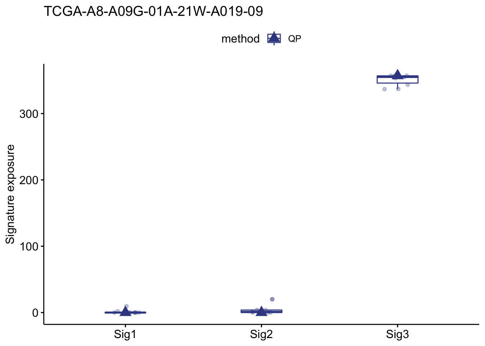

Chapter 4 Signature Fit: Sample Signature Exposure Quantification and Analysis
Besides de novo signature discovery shown in previous chapters, another common task is that
you have gotten some reference signatures (either from known database like COSMIC or de novo discovery step), you want to know how these signatures contribute (fit) in a sample. That’s the target of sig_fit().
sig_fit() uses multiple methods to compute exposure of pre-defined signatures from the spectrum of a (can be more) sample. Use ?sig_fit see more detail.
To show how this function works, we use a sample with maximum mutation counts as example data.
i <- which.max(apply(mt_tally$nmf_matrix, 1, sum))
example_mat <- mt_tally$nmf_matrix[i, , drop = FALSE] %>% t()head(example_mat)
#> TCGA-A8-A09G-01A-21W-A019-09
#> A[T>C]A 1
#> C[T>C]A 0
#> G[T>C]A 1
#> T[T>C]A 1
#> A[C>T]A 5
#> C[C>T]A 34.1 Fit Signatures from reference databases
For SBS signatures, users may want to directly use reference signatures from COSMIC database.
sig_fit(example_mat, sig_index = 1:30)
#> [36mℹ[39m [2020-10-09 00:03:19]: Started.
#> [32m✓[39m [2020-10-09 00:03:19]: Signature index detected.
#> [36mℹ[39m [2020-10-09 00:03:19]: Checking signature database in package.
#> [36mℹ[39m [2020-10-09 00:03:19]: Checking signature index.
#> [36mℹ[39m [2020-10-09 00:03:19]: Valid index for db 'legacy':
#> 1 2 3 4 5 6 7 8 9 10 11 12 13 14 15 16 17 18 19 20 21 22 23 24 25 26 27 28 29 30
#> [32m✓[39m [2020-10-09 00:03:19]: Database and index checked.
#> [32m✓[39m [2020-10-09 00:03:19]: Signature normalized.
#> [36mℹ[39m [2020-10-09 00:03:19]: Checking row number for catalog matrix and signature matrix.
#> [32m✓[39m [2020-10-09 00:03:19]: Checked.
#> [36mℹ[39m [2020-10-09 00:03:19]: Checking rownames for catalog matrix and signature matrix.
#> [36mℹ[39m [2020-10-09 00:03:19]: Matrix V and W don't have same orders. Try reordering...
#> [32m✓[39m [2020-10-09 00:03:19]: Checked.
#> [32m✓[39m [2020-10-09 00:03:19]: Method 'QP' detected.
#> [32m✓[39m [2020-10-09 00:03:19]: Corresponding function generated.
#> [36mℹ[39m [2020-10-09 00:03:19]: Calling function.
#> [32m✓[39m [2020-10-09 00:03:19]: Done.
#> [36mℹ[39m [2020-10-09 00:03:19]: Generating output signature exposures.
#> [32m✓[39m [2020-10-09 00:03:19]: Done.
#> [36mℹ[39m [2020-10-09 00:03:19]: 0.038 secs elapsed.
#> TCGA-A8-A09G-01A-21W-A019-09
#> COSMIC_1 24.215933
#> COSMIC_2 127.164108
#> COSMIC_3 0.000000
#> COSMIC_4 0.000000
#> COSMIC_5 0.000000
#> COSMIC_6 0.000000
#> COSMIC_7 4.907674
#> COSMIC_8 0.000000
#> COSMIC_9 0.000000
#> COSMIC_10 3.584276
#> COSMIC_11 0.000000
#> COSMIC_12 11.062526
#> COSMIC_13 168.298139
#> COSMIC_14 0.000000
#> COSMIC_15 0.000000
#> COSMIC_16 0.000000
#> COSMIC_17 5.578495
#> COSMIC_18 0.000000
#> COSMIC_19 0.000000
#> COSMIC_20 0.000000
#> COSMIC_21 0.000000
#> COSMIC_22 0.000000
#> COSMIC_23 0.000000
#> COSMIC_24 12.084656
#> COSMIC_25 0.000000
#> COSMIC_26 0.000000
#> COSMIC_27 0.000000
#> COSMIC_28 0.000000
#> COSMIC_29 0.000000
#> COSMIC_30 0.104192At default, COSMIC v2 signature database with 30 reference signatures is used (i.e.Â
sig_db = "legacy"). Setsig_db = "SBS"for COSMIC v3 signature database.
That’s it!
You can set type = "relative" for getting relative exposure.
sig_fit(example_mat, sig_index = 1:30, type = "relative")
#> [36mℹ[39m [2020-10-09 00:03:19]: Started.
#> [32m✓[39m [2020-10-09 00:03:19]: Signature index detected.
#> [36mℹ[39m [2020-10-09 00:03:19]: Checking signature database in package.
#> [36mℹ[39m [2020-10-09 00:03:19]: Checking signature index.
#> [36mℹ[39m [2020-10-09 00:03:19]: Valid index for db 'legacy':
#> 1 2 3 4 5 6 7 8 9 10 11 12 13 14 15 16 17 18 19 20 21 22 23 24 25 26 27 28 29 30
#> [32m✓[39m [2020-10-09 00:03:19]: Database and index checked.
#> [32m✓[39m [2020-10-09 00:03:19]: Signature normalized.
#> [36mℹ[39m [2020-10-09 00:03:19]: Checking row number for catalog matrix and signature matrix.
#> [32m✓[39m [2020-10-09 00:03:19]: Checked.
#> [36mℹ[39m [2020-10-09 00:03:19]: Checking rownames for catalog matrix and signature matrix.
#> [36mℹ[39m [2020-10-09 00:03:19]: Matrix V and W don't have same orders. Try reordering...
#> [32m✓[39m [2020-10-09 00:03:19]: Checked.
#> [32m✓[39m [2020-10-09 00:03:19]: Method 'QP' detected.
#> [32m✓[39m [2020-10-09 00:03:19]: Corresponding function generated.
#> [36mℹ[39m [2020-10-09 00:03:19]: Calling function.
#> [32m✓[39m [2020-10-09 00:03:19]: Done.
#> [36mℹ[39m [2020-10-09 00:03:19]: Generating output signature exposures.
#> [32m✓[39m [2020-10-09 00:03:19]: Done.
#> [36mℹ[39m [2020-10-09 00:03:19]: 0.04 secs elapsed.
#> TCGA-A8-A09G-01A-21W-A019-09
#> COSMIC_1 0.067832
#> COSMIC_2 0.356202
#> COSMIC_3 0.000000
#> COSMIC_4 0.000000
#> COSMIC_5 0.000000
#> COSMIC_6 0.000000
#> COSMIC_7 0.013747
#> COSMIC_8 0.000000
#> COSMIC_9 0.000000
#> COSMIC_10 0.010040
#> COSMIC_11 0.000000
#> COSMIC_12 0.030987
#> COSMIC_13 0.471423
#> COSMIC_14 0.000000
#> COSMIC_15 0.000000
#> COSMIC_16 0.000000
#> COSMIC_17 0.015626
#> COSMIC_18 0.000000
#> COSMIC_19 0.000000
#> COSMIC_20 0.000000
#> COSMIC_21 0.000000
#> COSMIC_22 0.000000
#> COSMIC_23 0.000000
#> COSMIC_24 0.033851
#> COSMIC_25 0.000000
#> COSMIC_26 0.000000
#> COSMIC_27 0.000000
#> COSMIC_28 0.000000
#> COSMIC_29 0.000000
#> COSMIC_30 0.000292For multiple samples, you can return a data.table, it can be easier to integrate with other information in R.
sig_fit(t(mt_tally$nmf_matrix[1:5, ]), sig_index = 1:30, return_class = "data.table", rel_threshold = 0.05)
#> [36mℹ[39m [2020-10-09 00:03:19]: Started.
#> [32m✓[39m [2020-10-09 00:03:19]: Signature index detected.
#> [36mℹ[39m [2020-10-09 00:03:19]: Checking signature database in package.
#> [36mℹ[39m [2020-10-09 00:03:19]: Checking signature index.
#> [36mℹ[39m [2020-10-09 00:03:19]: Valid index for db 'legacy':
#> 1 2 3 4 5 6 7 8 9 10 11 12 13 14 15 16 17 18 19 20 21 22 23 24 25 26 27 28 29 30
#> [32m✓[39m [2020-10-09 00:03:19]: Database and index checked.
#> [32m✓[39m [2020-10-09 00:03:19]: Signature normalized.
#> [36mℹ[39m [2020-10-09 00:03:19]: Checking row number for catalog matrix and signature matrix.
#> [32m✓[39m [2020-10-09 00:03:19]: Checked.
#> [36mℹ[39m [2020-10-09 00:03:19]: Checking rownames for catalog matrix and signature matrix.
#> [36mℹ[39m [2020-10-09 00:03:19]: Matrix V and W don't have same orders. Try reordering...
#> [32m✓[39m [2020-10-09 00:03:19]: Checked.
#> [32m✓[39m [2020-10-09 00:03:19]: Method 'QP' detected.
#> [32m✓[39m [2020-10-09 00:03:19]: Corresponding function generated.
#> [36mℹ[39m [2020-10-09 00:03:19]: Calling function.
#> [32m✓[39m [2020-10-09 00:03:19]: Done.
#> [36mℹ[39m [2020-10-09 00:03:19]: Generating output signature exposures.
#> [32m✓[39m [2020-10-09 00:03:19]: Done.
#> [36mℹ[39m [2020-10-09 00:03:19]: 0.052 secs elapsed.
#> sample COSMIC_1 COSMIC_2 COSMIC_3 COSMIC_4 COSMIC_5 COSMIC_6
#> 1: TCGA-A1-A0SH-01A-11D-A099-09 0.000000 37.420603 13.78689 0.000000 0 12.93472
#> 2: TCGA-A2-A04N-01A-11D-A10Y-09 20.039543 2.888675 0.00000 0.000000 0 0.00000
#> 3: TCGA-A2-A0CP-01A-11W-A050-09 3.648658 0.000000 0.00000 7.083113 0 0.00000
#> 4: TCGA-A2-A0EP-01A-52D-A22X-09 0.000000 0.000000 0.00000 2.492218 0 0.00000
#> 5: TCGA-A2-A0EV-01A-11W-A050-09 6.458422 0.000000 14.83102 0.000000 0 14.78142
#> COSMIC_7 COSMIC_8 COSMIC_9 COSMIC_10 COSMIC_11 COSMIC_12 COSMIC_13 COSMIC_14 COSMIC_15
#> 1: 21.332013 0.00000 0 0.000000 0 0.000000 31.306430 0.000000 0.00000
#> 2: 6.865345 12.11501 0 0.000000 0 0.000000 0.000000 0.000000 0.00000
#> 3: 10.348536 0.00000 0 0.000000 0 0.000000 0.000000 0.000000 18.37734
#> 4: 2.156319 0.00000 0 0.000000 0 1.334731 4.654227 6.728415 0.00000
#> 5: 21.963952 0.00000 0 7.978962 0 0.000000 5.713563 0.000000 0.00000
#> COSMIC_16 COSMIC_17 COSMIC_18 COSMIC_19 COSMIC_20 COSMIC_21 COSMIC_22 COSMIC_23 COSMIC_24
#> 1: 0 0 12.007682 0 0.000000 0.000000 0 0.00000 0
#> 2: 0 0 0.000000 0 7.516444 0.000000 0 0.00000 0
#> 3: 0 0 4.384106 0 0.000000 0.000000 0 0.00000 0
#> 4: 0 0 0.000000 0 0.000000 0.000000 0 1.26778 0
#> 5: 0 0 0.000000 0 0.000000 4.311951 0 0.00000 0
#> COSMIC_25 COSMIC_26 COSMIC_27 COSMIC_28 COSMIC_29 COSMIC_30
#> 1: 0 0 0 0 0.000000 0
#> 2: 0 0 0 0 0.000000 0
#> 3: 0 0 0 0 4.776321 0
#> 4: 0 0 0 0 0.000000 0
#> 5: 0 0 0 0 0.000000 0When you set multiple signatures, we recommend setting rel_threshold option, which will set exposure of a signature to 0 if its relative exposure in a sample less than the rel_threshold.
4.2 Fit Custom Signatures
We have already determined the SBS signatures before. Here we can set them to sig option.
sig_fit(example_mat, sig = mt_sig2)
#> [36mℹ[39m [2020-10-09 00:03:19]: Started.
#> [36mℹ[39m [2020-10-09 00:03:19]: Signature index not detected.
#> [32m✓[39m [2020-10-09 00:03:19]: Signature object detected.
#> [32m✓[39m [2020-10-09 00:03:19]: Database and index checked.
#> [32m✓[39m [2020-10-09 00:03:19]: Signature normalized.
#> [36mℹ[39m [2020-10-09 00:03:19]: Checking row number for catalog matrix and signature matrix.
#> [32m✓[39m [2020-10-09 00:03:19]: Checked.
#> [36mℹ[39m [2020-10-09 00:03:19]: Checking rownames for catalog matrix and signature matrix.
#> [32m✓[39m [2020-10-09 00:03:19]: Checked.
#> [32m✓[39m [2020-10-09 00:03:19]: Method 'QP' detected.
#> [32m✓[39m [2020-10-09 00:03:19]: Corresponding function generated.
#> [36mℹ[39m [2020-10-09 00:03:19]: Calling function.
#> [32m✓[39m [2020-10-09 00:03:19]: Done.
#> [36mℹ[39m [2020-10-09 00:03:19]: Generating output signature exposures.
#> [32m✓[39m [2020-10-09 00:03:19]: Done.
#> [36mℹ[39m [2020-10-09 00:03:19]: 0.033 secs elapsed.
#> TCGA-A8-A09G-01A-21W-A019-09
#> Sig1 0
#> Sig2 0
#> Sig3 3574.3 Performance Comparison
Now that we can use sig_fit for getting optimal exposures, we can compare the RSS between raw matrix and the reconstructed matrix either by NMF and sig_fit().
i.e.Â
\[ RSS = \sum(\hat H - H)^2 \]
## Exposure got from NMF
sum((apply(mt_sig2$Signature, 2, function(x) x / sum(x)) %*% mt_sig2$Exposure - t(mt_tally$nmf_matrix))^2)
#> [1] 8891.978## Exposure optimized by sig_fit
H_estimate <- apply(mt_sig2$Signature, 2, function(x) x / sum(x)) %*% sig_fit(t(mt_tally$nmf_matrix), sig = mt_sig2)
#> [36mℹ[39m [2020-10-09 00:03:19]: Started.
#> [36mℹ[39m [2020-10-09 00:03:19]: Signature index not detected.
#> [32m✓[39m [2020-10-09 00:03:19]: Signature object detected.
#> [32m✓[39m [2020-10-09 00:03:19]: Database and index checked.
#> [32m✓[39m [2020-10-09 00:03:19]: Signature normalized.
#> [36mℹ[39m [2020-10-09 00:03:19]: Checking row number for catalog matrix and signature matrix.
#> [32m✓[39m [2020-10-09 00:03:19]: Checked.
#> [36mℹ[39m [2020-10-09 00:03:19]: Checking rownames for catalog matrix and signature matrix.
#> [32m✓[39m [2020-10-09 00:03:19]: Checked.
#> [32m✓[39m [2020-10-09 00:03:19]: Method 'QP' detected.
#> [32m✓[39m [2020-10-09 00:03:19]: Corresponding function generated.
#> [36mℹ[39m [2020-10-09 00:03:19]: Calling function.
#> [32m✓[39m [2020-10-09 00:03:20]: Done.
#> [36mℹ[39m [2020-10-09 00:03:20]: Generating output signature exposures.
#> [32m✓[39m [2020-10-09 00:03:20]: Done.
#> [36mℹ[39m [2020-10-09 00:03:20]: 0.036 secs elapsed.
H_estimate <- apply(H_estimate, 2, function(x) ifelse(is.nan(x), 0, x))
H_real <- t(mt_tally$nmf_matrix)
sum((H_estimate - H_real)^2)
#> [1] 8242.634.4 Estimate Exposure Stability by Bootstrap
This feature is based on sig_fit(), it uses the resampling data of original input and runs sig_fit() multiple times to estimate the exposure. Bootstrap replicates >= 100 is recommended, here I just use 10 times for illustration.
bt_result <- sig_fit_bootstrap_batch(example_mat, sig = mt_sig2, n = 10)
#> [36mℹ[39m [2020-10-09 00:03:20]: Batch Bootstrap Signature Exposure Analysis Started.
#> [36mℹ[39m [2020-10-09 00:03:20]: Samples to be filtered out:
#> [36mℹ[39m [2020-10-09 00:03:20]: Finding optimal exposures (&errors) for different methods.
#> [36mℹ[39m [2020-10-09 00:03:20]: Calling method `QP`.
#> [36mℹ[39m [2020-10-09 00:03:20]: Started.
#> [36mℹ[39m [2020-10-09 00:03:20]: Signature index not detected.
#> [32m✓[39m [2020-10-09 00:03:20]: Signature object detected.
#> [32m✓[39m [2020-10-09 00:03:20]: Database and index checked.
#> [32m✓[39m [2020-10-09 00:03:20]: Signature normalized.
#> [36mℹ[39m [2020-10-09 00:03:20]: Checking row number for catalog matrix and signature matrix.
#> [32m✓[39m [2020-10-09 00:03:20]: Checked.
#> [36mℹ[39m [2020-10-09 00:03:20]: Checking rownames for catalog matrix and signature matrix.
#> [32m✓[39m [2020-10-09 00:03:20]: Checked.
#> [32m✓[39m [2020-10-09 00:03:20]: Method 'QP' detected.
#> [32m✓[39m [2020-10-09 00:03:20]: Corresponding function generated.
#> [36mℹ[39m [2020-10-09 00:03:20]: Calling function.
#> [32m✓[39m [2020-10-09 00:03:20]: Done.
#> [36mℹ[39m [2020-10-09 00:03:20]: Generating output signature exposures.
#> [32m✓[39m [2020-10-09 00:03:20]: Done.
#> [36mℹ[39m [2020-10-09 00:03:20]: Calculating errors (Frobenius Norm).
#> [32m✓[39m [2020-10-09 00:03:20]: Done.
#> [36mℹ[39m [2020-10-09 00:03:20]: 0.044 secs elapsed.
#> [36mℹ[39m [2020-10-09 00:03:20]: Getting bootstrap exposures (&errors/similarity) for different methods.
#> [36mℹ[39m [2020-10-09 00:03:20]: This step is time consuming, please be patient.
#> [36mℹ[39m [2020-10-09 00:03:20]: Processing sample `TCGA-A8-A09G-01A-21W-A019-09`.
#> [36mℹ[39m [2020-10-09 00:03:20]: Started.
#> [36mℹ[39m [2020-10-09 00:03:20]: Checking catalog.
#> [32m✓[39m [2020-10-09 00:03:20]: Done.
#> [36mℹ[39m [2020-10-09 00:03:20]: About to start bootstrap.
#>
→ Bootstrapping 10 times.
→ Total 10 times, starting no.1.
→ Total 10 times, starting no.2.
→ Total 10 times, starting no.3.
→ Total 10 times, starting no.4.
→ Total 10 times, starting no.5.
→ Total 10 times, starting no.6.
→ Total 10 times, starting no.7.
→ Total 10 times, starting no.8.
→ Total 10 times, starting no.9.
→ Total 10 times, starting no.10.
[32m✓[39m [2020-10-09 00:03:20]: Bootstrap done.
#> [32m✓[39m [2020-10-09 00:03:20]: Signature exposures collected.
#> [32m✓[39m [2020-10-09 00:03:20]: Errors and similarity collected.
#> [32m✓[39m [2020-10-09 00:03:20]: Done.
#> [36mℹ[39m [2020-10-09 00:03:20]: 0.73 secs elapsed.
#> [32m✓[39m [2020-10-09 00:03:21]: Gotten.
#> [36mℹ[39m [2020-10-09 00:03:21]: Reporting p values...
#> [36mℹ[39m [2020-10-09 00:03:21]: Started.
#> [32m✓[39m [2020-10-09 00:03:21]: Batch mode enabled.
#> [32m✓[39m [2020-10-09 00:03:21]: Done.
#> [36mℹ[39m [2020-10-09 00:03:21]: 0.008 secs elapsed.
#> [32m✓[39m [2020-10-09 00:03:21]: Done.
#> [36mℹ[39m [2020-10-09 00:03:21]: Cleaning results...
#> [32m✓[39m [2020-10-09 00:03:21]: Outputing.
#> [36mℹ[39m [2020-10-09 00:03:21]: Total 1.513 secs elapsed.
bt_result
#> $expo
#> method sample sig exposure type
#> 1: QP TCGA-A8-A09G-01A-21W-A019-09 Sig1 0.000000 optimal
#> 2: QP TCGA-A8-A09G-01A-21W-A019-09 Sig2 0.000000 optimal
#> 3: QP TCGA-A8-A09G-01A-21W-A019-09 Sig3 357.000000 optimal
#> 4: QP TCGA-A8-A09G-01A-21W-A019-09 Sig1 0.946289 Rep_1
#> 5: QP TCGA-A8-A09G-01A-21W-A019-09 Sig2 0.000000 Rep_1
#> 6: QP TCGA-A8-A09G-01A-21W-A019-09 Sig3 356.053711 Rep_1
#> 7: QP TCGA-A8-A09G-01A-21W-A019-09 Sig1 0.000000 Rep_2
#> 8: QP TCGA-A8-A09G-01A-21W-A019-09 Sig2 0.665703 Rep_2
#> 9: QP TCGA-A8-A09G-01A-21W-A019-09 Sig3 356.334297 Rep_2
#> 10: QP TCGA-A8-A09G-01A-21W-A019-09 Sig1 4.827506 Rep_3
#> 11: QP TCGA-A8-A09G-01A-21W-A019-09 Sig2 1.975564 Rep_3
#> 12: QP TCGA-A8-A09G-01A-21W-A019-09 Sig3 350.196930 Rep_3
#> 13: QP TCGA-A8-A09G-01A-21W-A019-09 Sig1 0.000000 Rep_4
#> 14: QP TCGA-A8-A09G-01A-21W-A019-09 Sig2 17.364027 Rep_4
#> 15: QP TCGA-A8-A09G-01A-21W-A019-09 Sig3 339.635973 Rep_4
#> 16: QP TCGA-A8-A09G-01A-21W-A019-09 Sig1 0.000000 Rep_5
#> 17: QP TCGA-A8-A09G-01A-21W-A019-09 Sig2 0.000000 Rep_5
#> 18: QP TCGA-A8-A09G-01A-21W-A019-09 Sig3 357.000000 Rep_5
#> 19: QP TCGA-A8-A09G-01A-21W-A019-09 Sig1 0.000000 Rep_6
#> 20: QP TCGA-A8-A09G-01A-21W-A019-09 Sig2 13.144174 Rep_6
#> 21: QP TCGA-A8-A09G-01A-21W-A019-09 Sig3 343.855826 Rep_6
#> 22: QP TCGA-A8-A09G-01A-21W-A019-09 Sig1 0.000000 Rep_7
#> 23: QP TCGA-A8-A09G-01A-21W-A019-09 Sig2 0.000000 Rep_7
#> 24: QP TCGA-A8-A09G-01A-21W-A019-09 Sig3 357.000000 Rep_7
#> 25: QP TCGA-A8-A09G-01A-21W-A019-09 Sig1 0.000000 Rep_8
#> 26: QP TCGA-A8-A09G-01A-21W-A019-09 Sig2 0.725801 Rep_8
#> 27: QP TCGA-A8-A09G-01A-21W-A019-09 Sig3 356.274199 Rep_8
#> 28: QP TCGA-A8-A09G-01A-21W-A019-09 Sig1 1.815610 Rep_9
#> 29: QP TCGA-A8-A09G-01A-21W-A019-09 Sig2 0.000000 Rep_9
#> 30: QP TCGA-A8-A09G-01A-21W-A019-09 Sig3 355.184390 Rep_9
#> 31: QP TCGA-A8-A09G-01A-21W-A019-09 Sig1 5.396253 Rep_10
#> 32: QP TCGA-A8-A09G-01A-21W-A019-09 Sig2 0.000000 Rep_10
#> 33: QP TCGA-A8-A09G-01A-21W-A019-09 Sig3 351.603747 Rep_10
#> method sample sig exposure type
#>
#> $error
#> method sample errors type
#> 1: QP TCGA-A8-A09G-01A-21W-A019-09 18.549 optimal
#> 2: QP TCGA-A8-A09G-01A-21W-A019-09 18.569 Rep_1
#> 3: QP TCGA-A8-A09G-01A-21W-A019-09 18.562 Rep_2
#> 4: QP TCGA-A8-A09G-01A-21W-A019-09 18.802 Rep_3
#> 5: QP TCGA-A8-A09G-01A-21W-A019-09 19.852 Rep_4
#> 6: QP TCGA-A8-A09G-01A-21W-A019-09 18.549 Rep_5
#> 7: QP TCGA-A8-A09G-01A-21W-A019-09 19.357 Rep_6
#> 8: QP TCGA-A8-A09G-01A-21W-A019-09 18.549 Rep_7
#> 9: QP TCGA-A8-A09G-01A-21W-A019-09 18.563 Rep_8
#> 10: QP TCGA-A8-A09G-01A-21W-A019-09 18.592 Rep_9
#> 11: QP TCGA-A8-A09G-01A-21W-A019-09 18.733 Rep_10
#>
#> $cosine
#> method sample cosine type
#> 1: QP TCGA-A8-A09G-01A-21W-A019-09 0.988326 optimal
#> 2: QP TCGA-A8-A09G-01A-21W-A019-09 0.984054 Rep_1
#> 3: QP TCGA-A8-A09G-01A-21W-A019-09 0.970861 Rep_2
#> 4: QP TCGA-A8-A09G-01A-21W-A019-09 0.975965 Rep_3
#> 5: QP TCGA-A8-A09G-01A-21W-A019-09 0.986422 Rep_4
#> 6: QP TCGA-A8-A09G-01A-21W-A019-09 0.980611 Rep_5
#> 7: QP TCGA-A8-A09G-01A-21W-A019-09 0.973734 Rep_6
#> 8: QP TCGA-A8-A09G-01A-21W-A019-09 0.977018 Rep_7
#> 9: QP TCGA-A8-A09G-01A-21W-A019-09 0.980199 Rep_8
#> 10: QP TCGA-A8-A09G-01A-21W-A019-09 0.979075 Rep_9
#> 11: QP TCGA-A8-A09G-01A-21W-A019-09 0.976375 Rep_10
#>
#> $p_val
#> sample method threshold sig p_value
#> 1: TCGA-A8-A09G-01A-21W-A019-09 QP 0.05 Sig1 1
#> 2: TCGA-A8-A09G-01A-21W-A019-09 QP 0.05 Sig2 1
#> 3: TCGA-A8-A09G-01A-21W-A019-09 QP 0.05 Sig3 0You can plot the result very easily with functions provided by sigminer.
show_sig_bootstrap_exposure(bt_result, sample = "TCGA-A8-A09G-01A-21W-A019-09")
#> [36mℹ[39m [2020-10-09 00:03:21]: Started.
#> [36mℹ[39m [2020-10-09 00:03:21]: Plotting.
#> [36mℹ[39m [2020-10-09 00:03:21]: 0.027 secs elapsed.
show_sig_bootstrap_error(bt_result, sample = "TCGA-A8-A09G-01A-21W-A019-09")
#> [36mℹ[39m [2020-10-09 00:03:21]: Started.
#> [36mℹ[39m [2020-10-09 00:03:21]: Plotting.
#> [36mℹ[39m [2020-10-09 00:03:21]: 0.025 secs elapsed.show_sig_bootstrap_stability(bt_result)
#> [36mℹ[39m [2020-10-09 00:03:21]: Started.
#> [36mℹ[39m [2020-10-09 00:03:21]: Plotting.
#> [36mℹ[39m [2020-10-09 00:03:21]: 0.036 secs elapsed. P values have been calculated under specified relative exposure cutoff (0.05 at default).
P values have been calculated under specified relative exposure cutoff (0.05 at default).
The result indicates Sig3 is very stable.